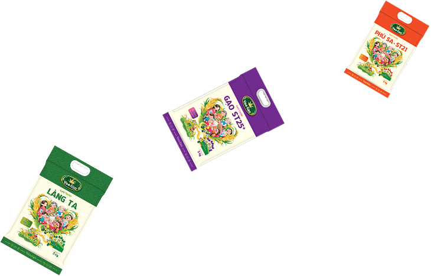
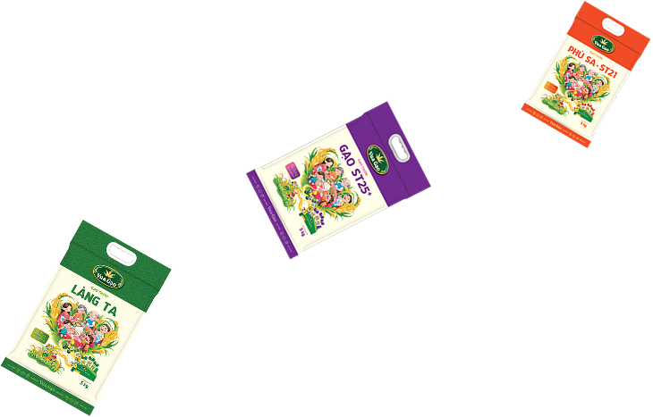

giới thiệufebi foods
Khởi nguồn từ hạt gạo – Hành trình nâng tầm giá trị Việt Hạt gạo – biểu tượng văn hóa, linh hồn ẩm thực của người Việt – đã gắn bó với đời sống hàng triệu gia đình qua bao thế hệ. Tuy nhiên, trong guồng quay hiện đại, làm sao để gạo không chỉ là lương thực thiết yếu, mà còn trở thành sản phẩm chất lượng cao, tiện lợi, thân thiện môi trường và phù hợp với xu hướng tiêu dùng mới?
Xem thêm
 

 
